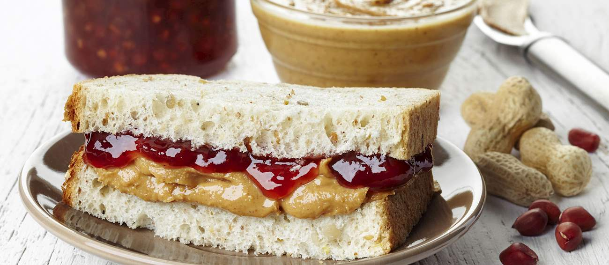

properly prepared PB&J

servings: 1 | ingredients: 3 | prep time: depends on specifications
description:
PB&J is a deceptively simple-sounding item that is easy to make incorrectly. The proper way to construct a peanut butter and jelly sandwich includes, among other details, following the precise specifications of the person who will be eating it.
This recipe helps you prevent fatal errors in about 85% of PB&J instances. Please note that it does not, for instance, cover advanced custom slicing methods. However, the general sandwich engineering skills you learn here will help you execute better in most high-stakes sandwich-making situations.
ingredients:
- peanut butter, specified brand and texture
- spreadable fruit substance, specified fruit(s), consistency, and sweetness
- bread, also as specified
steps:
- Check with the client to ensure you have secured the correct versions of each ingredient.
- Find out if this is a standard or open-faced sandwich and select the correct number of bread slices. For a standard sandwich, be sure your bread stays aligned throughout this process. Your finished sandwich should close up with the same bread sides facing each other as were facing each other in the bread bag. This prevents disturbing shape/size mismatches in sandwiches derived from asymmetrical/tapered bread loaves. (Virtually all bread loaves are at least slightly asymmetrical!)
- Ask if the bread should be toasted, and if so how much, and proceed accordingly.
- Apply peanut butter to one slice of bread. Check with the client to see if you have applied the correct amount and adjust as necessary. Note: spread both peanut butter and jelly at a uniform thickness to the very edges of the bread! Unless specified by the client, there should be no sandwich bites that are a.) mostly bread or b.) way gooier than elsewhere.
- Open-faced sandwich: add jelly on top of peanut butter delicately so as not to mix them together.
- Standard sandwich: add jelly to second piece of bread. Just before spreading the jelly is a good time to double-check that your slices are still aligned with each other, as explained in step 1. Verify proper jelly amount, and close sandwich.
- Find out if the crust is to remain on the sandwich and act accordingly.
- Verify cut of sandwich. Gauge your cutting precisely to subdivide sandwich directly in half at each step. This is not the time to get messy and destroy all the good work you've already done. Judicious knife selection is also important! You want to slice the sandwich, not squish it down in the middle while the contents ooze out the sides. Popular sandwich subdivision choices include:
- unsliced
- sliced in half diagonally (big triangles)
- sliced in quarters diagonally (small triangles)
- sliced in half top to bottom (long rectangles)
- sliced in quarters at 90 degree angles (small squares)
- Present the sandwich to the client on an appropriate plate.
Again, keep in mind that mastering these techniques means gaining skills that transfer to virtually all sandwich making domains. Balanced ingredient layout, correct bread alignment, proper tool selection, and all-around client-centered design are invaluable sandwich development competencies!